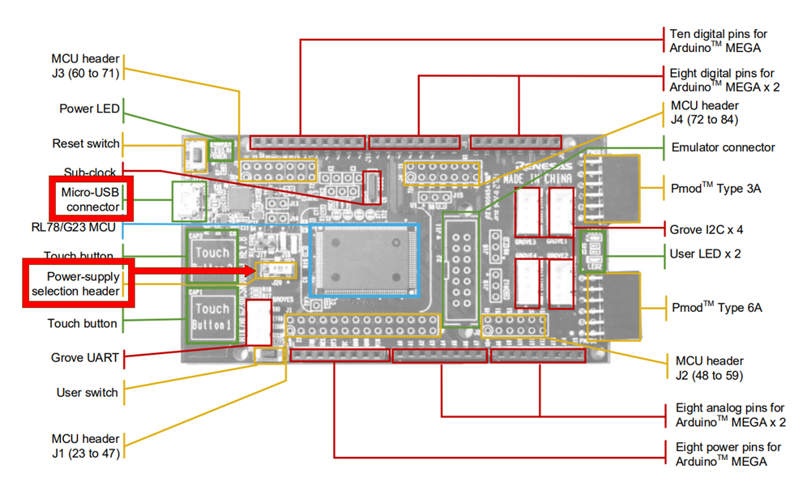

Here we will guide you through the hardware considerations (i.e. board setup) for the lab.
On the board please set jumper J20 to Position 2-3 (+3V3).
And connect the board to your development PC via the USB micro connector.
These are highlted in the image below.
